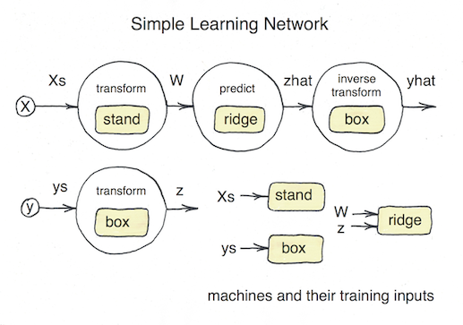

Composing Models
MLJ has a flexible interface for composing multiple machine learning elements to form a learning network, whose complexity can extend beyond the "pipelines" of other machine learning toolboxes. While these learning networks can be applied directly to learning tasks, they are more commonly used to specify new re-usable, stand-alone, composite model types, that behave like any other model type. The main novelty of composite models is that they include other models as hyper-parameters.
That said, MLJ also provides dedicated syntax for the most common composition use-cases, which are described first below. A description of the general framework begins at Learning Networks.
Linear pipelines
In MLJ a pipeline is a composite model in which models are chained together in a linear (non-branching) chain. Pipelines can include learned or static target transformations, if one of the models is supervised.
To illustrate basic construction of a pipeline, consider the following toy data:
using MLJ
X = (age = [23, 45, 34, 25, 67],
gender = categorical(['m', 'm', 'f', 'm', 'f']));
height = [67.0, 81.5, 55.6, 90.0, 61.1]The code below defines a new model type, and an instance of that type called pipe, for performing the following operations:
- standardize the target variable
:heightto have mean zero and standard deviation one - coerce the
:agefield to haveContinuousscitype - one-hot encode the categorical feature
:gender - train a K-nearest neighbor model on the transformed inputs and transformed target
- restore the predictions of the KNN model to the original
:heightscale (i.e., invert the standardization)
pipe = @pipeline(X -> coerce(X, :age=>Continuous),
OneHotEncoder,
KNNRegressor(K=3),
target = UnivariateStandardizer())
Pipeline406(
one_hot_encoder = OneHotEncoder(
features = Symbol[],
drop_last = false,
ordered_factor = true,
ignore = false),
knn_regressor = KNNRegressor(
K = 3,
algorithm = :kdtree,
metric = Distances.Euclidean(0.0),
leafsize = 10,
reorder = true,
weights = :uniform),
target = UnivariateStandardizer()) @719
Notice that field names for the composite are automatically generated based on the component model type names. The automatically generated name of the new model composite model type, Pipeline406, can be replaced with a user-defined one by specifying, say, name=MyPipe. If you are planning on serializing (saving) a pipeline-machine, you will need to specify a name..
The new model can be used just like any other non-composite model:
pipe.knn_regressor.K = 2
pipe.one_hot_encoder.drop_last = true
evaluate(pipe, X, height, resampling=Holdout(), measure=l2, verbosity=2)
[ Info: Training Machine{Pipeline406} @959.
[ Info: Training Machine{UnivariateStandardizer} @422.
[ Info: Training Machine{OneHotEncoder} @745.
[ Info: Spawning 1 sub-features to one-hot encode feature :gender.
[ Info: Training Machine{KNNRegressor} @005.
┌───────────┬───────────────┬────────────┐
│ _.measure │ _.measurement │ _.per_fold │
├───────────┼───────────────┼────────────┤
│ l2 │ 55.5 │ [55.5] │
└───────────┴───────────────┴────────────┘
_.per_observation = [[[55.502499999999934]]]
For important details on including target transformations, see below.
MLJBase.@pipeline — Macro@pipeline model1 model2 ... modelkCreate an instance of an automatically generated composite model type, in which the specified models are composed in order. This means model1 receives inputs, whose output is passed to model2, and so forth. Model types or instances may be specified.
Important. By default a new model type name is automatically generated. To specify a different name add a keyword argument such as name=MyPipeType. This is necessary if serializing the pipeline; see MLJ.save.
At most one of the models may be a supervised model, but this model can appear in any position.
The @pipeline macro accepts several key-word arguments discussed further below.
Static (unlearned) transformations - that is, ordinary functions - may also be inserted in the pipeline as shown in the following example:
@pipeline X->coerce(X, :age=>Continuous) OneHotEncoder ConstantClassifierTarget transformation and inverse transformation
A learned target transformation (such as standardization) can also be specified, using the key-word target, provided the transformer provides an inverse_transform method:
@pipeline OneHotEncoder KNNRegressor target=UnivariateTransformerA static transformation can be specified instead, but then an inverse must also be given:
@pipeline(OneHotEncoder, KNNRegressor,
target = v -> log.(v),
inverse = v -> exp.(v))Important. By default, the target inversion is applied immediately following the (unique) supervised model in the pipeline. To apply at the end of the pipeline, specify invert_last=true.
Optional key-word arguments
target=...- anyUnsupervisedmodel orFunctioninverse=...- anyFunction(unspecified iftargetisUnsupervised)invert_last- set totrueto delay target inversion to end of pipeline (default=true)prediction_type- prediction type of the pipeline; possible values::deterministic,:probabilistic,:interval(default=:deterministicif not inferable)operation- operation applied to the supervised component model, when present; possible values:predict,predict_mean,predict_median,predict_mode(default=predict)name- new composite model type name; can be any name not already in current global namespace (autogenerated by default(
See also: @from_network
Homogeneous Ensembles
For performance reasons, creating a large ensemble of models sharing a common set of hyperparameters is achieved in MLJ through a model wrapper, rather than through the learning networks API. See the separate Homogeneous Ensembles section for details.
Learning Networks
Hand-crafting a learning network, as outlined below, is a relatively advanced MLJ feature, assuming familiarity with the basics outlined in Getting Started. The syntax for building a learning network is essentially an extension of the basic syntax but with data containers replaced with nodes ("dynamic data").
In MLJ, a learning network is a directed acyclic graph whose nodes apply an operation, such as predict or transform, using a fixed machine (requiring training) - or which, alternatively, applies a regular (untrained) mathematical operation, such as +, log or vcat, to its input(s). In practice, a learning network works with fixed sources for its training/evaluation data, but can be built and tested in stages. By contrast, an exported learning network is a learning network exported as a stand-alone, re-usable Model object, to which all the MLJ Model meta-algorithms can be applied (ensembling, systematic tuning, etc).
Different nodes can point to the same machine (i.e., can access a common set of learned parameters) and different machines can wrap a common model (allowing for hyperparameters in different machines to be coupled).
By specifying data at the source nodes of a learning network, one can use and test the learning network as it is defined, which is also a good way to understand how learning networks work under the hood. This data, if specified, is ignored in the export process, for the exported composite model, like any other model, is not associated with any data until wrapped in a machine.
In MLJ learning networks treat the flow of information during training and prediction/transforming separately. Also, different nodes may use the same parameters (fitresult) learned during the training of some model (that is, point to a common machine; see below). For these reasons, simple examples may appear more slightly more complicated than in other frameworks. However, in more sophisticated applications, the extra flexibility is essential.
Building a simple learning network

The diagram above depicts a learning network which standardizes the input data X, learns an optimal Box-Cox transformation for the target y, predicts new target values using ridge regression, and then inverse-transforms those predictions, for later comparison with the original test data. The machines, labeled in yellow, are where data to be used for training enters a node, and where training outcomes are stored, as in the basic fit/predict scenario.
Looking ahead, we note that the new composite model type we will create later will be assigned a single hyperparameter regressor, and the learning network model RidgeRegressor(lambda=0.1) will become this parameter's default value. Since model hyperparameters are mutable, this regressor can be changed to a different one (e.g., HuberRegressor()).
For testing purposes, we'll use a small synthetic data set:
using Statistics
import DataFrames
x1 = rand(300)
x2 = rand(300)
x3 = rand(300)
y = exp.(x1 - x2 -2x3 + 0.1*rand(300))
X = DataFrames.DataFrame(x1=x1, x2=x2, x3=x3)
train, test = partition(eachindex(y), 0.8)Step one is to wrap the data in source nodes:
Xs = source(X)
ys = source(y)Note. One can omit the specification of data at the source nodes (by writing instead Xs = source() and ys = source()) and still export the resulting network as a stand-alone model using the @from_network macro described later; see the example under Static operations on nodes. However, one will be unable to fit or call network nodes, as illustrated below.
The contents of a source node can be recovered by simply calling the node with no arguments:
julia> ys()[1:2]
2-element Array{Float64,1}:
0.12350299813414874
0.29425920370829295We label the nodes that we will define according to their outputs in the diagram. Notice that the nodes z and yhat use the same machine, namely box, for different operations.
To construct the W node we first need to define the machine stand that it will use to transform inputs.
stand_model = Standardizer()
stand = machine(stand_model, Xs)Because Xs is a node, instead of concrete data, we can call transform on the machine without first training it, and the result is the new node W, instead of concrete transformed data:
julia> W = transform(stand, Xs)
Node{Machine{Standardizer}} @325
args:
1: Source @085
formula:
transform(
Machine{Standardizer} @709,
Source @085)To get actual transformed data we call the node appropriately, which will require we first train the node. Training a node, rather than a machine, triggers training of all necessary machines in the network.
fit!(W, rows=train)
W() # transform all data
W(rows=test ) # transform only test data
W(X[3:4,:]) # transform any data, new or old2×3 DataFrame
│ Row │ x1 │ x2 │ x3 │
│ │ Float64 │ Float64 │ Float64 │
├─────┼──────────┼───────────┼───────────┤
│ 1 │ 0.113486 │ 0.732189 │ 1.4783 │
│ 2 │ 0.783227 │ -0.425371 │ -0.113503 │If you like, you can think of W (and the other nodes we will define) as "dynamic data": W is data, in the sense that it an be called ("indexed") on rows, but dynamic, in the sense the result depends on the outcome of training events.
The other nodes of our network are defined similarly:
@load RidgeRegressor pkg=MultivariateStats
box_model = UnivariateBoxCoxTransformer() # for making data look normally-distributed
box = machine(box_model, ys)
z = transform(box, ys)
ridge_model = RidgeRegressor(lambda=0.1)
ridge =machine(ridge_model, W, z)
zhat = predict(ridge, W)
yhat = inverse_transform(box, zhat)
We are ready to train and evaluate the completed network. Notice that the standardizer, stand, is not retrained, as MLJ remembers that it was trained earlier:
fit!(yhat, rows=train)[ Info: Not retraining Machine{Standardizer} @ 6…82. It is up-to-date.
[ Info: Training Machine{UnivariateBoxCoxTransformer} @ 1…09.
[ Info: Training Machine{RidgeRegressor} @ 2…66.rms(y[test], yhat(rows=test)) # evaluate0.022837595088079567We can change a hyperparameters and retrain:
ridge_model.lambda = 0.01
fit!(yhat, rows=train)[ Info: Not retraining Machine{UnivariateBoxCoxTransformer} @ 1…09. It is up-to-date.
[ Info: Not retraining Machine{Standardizer} @ 6…82. It is up-to-date.
[ Info: Updating Machine{RidgeRegressor} @ 2…66.
Node @ 1…07 = inverse_transform(1…09, predict(2…66, transform(6…82, 3…40)))And re-evaluate:
rms(y[test], yhat(rows=test))
0.039410306910269116Notable feature. The machine,
ridge::Machine{RidgeRegressor}, is retrained, because its underlying model has been mutated. However, since the outcome of this training has no effect on the training inputs of the machinesstandandbox, these transformers are left untouched. (During construction, each node and machine in a learning network determines and records all machines on which it depends.) This behavior, which extends to exported learning networks, means we can tune our wrapped regressor (using a holdout set) without re-computing transformations each time the hyperparameter is changed.
Learning network machines
As we show next, a learning network needs to be exported to create a new stand-alone model type. Instances of that type can be bound with data in a machine, which can then be evaluated, for example. Somewhat paradoxically, one can wrap a learning network in a certain kind of machine, called a learning network machine, before exporting it, and in fact, the export process actually requires us to do so. Since a composite model type does not yet exist, one constructs the machine using a "surrogate" model, whose name indicates the ultimate model supertype (Deterministic, Probabilistic, Unsupervised or Static). This surrogate model has no fields.
Continuing with the example above:
julia> surrogate = Deterministic()
DeterministicSurrogate() @047
mach = machine(surrogate, Xs, ys; predict=yhat)Notice that a key-word argument declares which node is for making predictions, and the arguments Xs and ys declare which source nodes receive the input and target data. With mach constructed in this way, the code
fit!(mach)
predict(mach, X[test,:])is equivalent to
fit!(yhat)
yhat(X[test,:])While it's main purpose is for export (see below), this machine can actually be evaluated:
evaluate!(mach, resampling=CV(nfolds=3), measure=l2)For more on constructing learning network machines, see machine.
Exporting a learning network as a stand-alone model
Having satisfied that our learning network works on the synthetic data, we are ready to export it as a stand-alone model.
Method I: The @from_network macro
Having defined a learning network machine, mach, as above, the following code defines a new model subtype WrappedRegressor <: Supervised with a single field regressor:
@from_network mach begin
mutable struct WrappedRegressor
regressor=ridge_model
end
endNote the declaration of the default value ridge_model, which must refer to an actual model appearing in the learning network. It can be typed, as in the alternative declaration below, which also declares some traits for the type (as shown by info(WrappedRegressor); see also Trait declarations).
@from_network mach begin
mutable struct WrappedRegressor
regressor::Deterministic=ridge_model
end
input_scitype = Table(Continuous,Finite)
target_scitype = AbstractVector{<:Continuous}
end
We can now create an instance of this type and apply the meta-algorithms that apply to any MLJ model:
julia> composite = WrappedRegressor()
WrappedRegressor(
regressor = RidgeRegressor(
lambda = 0.01))
X, y = @load_boston;
evaluate(composite, X, y, resampling=CV(), measure=l2, verbosity=0)Since our new type is mutable, we can swap the RidgeRegressor out for any other regressor:
@load KNNRegressor
composite.regressor = KNNRegressor(K=7)
julia> composite
WrappedRegressor(regressor = KNNRegressor(K = 7,
algorithm = :kdtree,
metric = Distances.Euclidean(0.0),
leafsize = 10,
reorder = true,
weights = :uniform,),) @ 2…63Method II: Finer control (advanced)
This section describes an advanced feature that can be skipped on a first reading.
In Method I above, only models appearing in the network will appear as hyperparameters of the exported composite model. There is a second more flexible method for exporting the network, which allows finer control over the exported Model struct, and which also avoids macros. The two steps required are:
Define a new
mutable structmodel type.Wrap the learning network code in a model
fitmethod.
Let's start with an elementary illustration in the learning network we just exported using Method I.
The mutable struct definition looks like this:
mutable struct WrappedRegressor2 <: DeterministicComposite
regressor
end
# keyword constructor
WrappedRegressor2(; regressor=RidgeRegressor()) = WrappedRegressor2(regressor)The other supertype options are ProbabilisticComposite, IntervalComposite, UnsupervisedComposite and StaticComposite.
We now simply cut and paste the code defining the learning network into a model fit method (as opposed to a machine fit! method):
function MLJ.fit(model::WrappedRegressor2, verbosity::Integer, X, y)
Xs = source(X)
ys = source(y)
stand_model = Standardizer()
stand = machine(stand_model, Xs)
W = transform(stand, Xs)
box_model = UnivariateBoxCoxTransformer()
box = machine(box_model, ys)
z = transform(box, ys)
ridge_model = model.regressor ###
ridge =machine(ridge_model, W, z)
zhat = predict(ridge, W)
yhat = inverse_transform(box, zhat)
mach = machine(Deterministic(), Xs, ys; predict=yhat)
return!(mach, model, verbosity)
endThis completes the export process.
Notes:
The line marked
###, where the new exported model's hyperparameterregressoris spliced into the network, is the only modification to the previous code.After defining the network there is the additional step of constructing and fitting a learning network machine (see above).
The last call in the function
return!(mach, model, verbosity)callsfit!on the learning network machinemachand splits it into various pieces, as required by the MLJ model interface. See also thereturn!doc-string.Important note An MLJ
fitmethod is not allowed to mutate itsmodelargument.
What's going on here? MLJ's machine interface is built atop a more primitive model interface, implemented for each algorithm. Each supervised model type (eg,
RidgeRegressor) requires modelfitandpredictmethods, which are called by the corresponding machinefit!andpredictmethods. We don't need to define a modelpredictmethod here because MLJ provides a fallback which simply calls thepredicton the learning network machine created in thefitmethod.
A composite model coupling component model hyper-parameters
We now give a more complicated example of a composite model which exposes some parameters used in the network that are not simply component models. The model combines a clustering model (e.g., KMeans()) for dimension reduction with ridge regression, but has the following "coupling" of the hyper parameters: The ridge regularization depends on the number of clusters used (with less regularization for a greater number of clusters) and a user-specified "coupling" coefficient K.
@load RidgeRegressor pkg=MLJLinearModels
mutable struct MyComposite <: DeterministicComposite
clusterer # the clustering model (e.g., KMeans())
ridge_solver # a ridge regression parameter we want to expose
K::Float64 # a "coupling" coefficient
end
function MLJ.fit(composite::Composite, verbosity, X, y)
Xs = source(X)
ys = source(y)
clusterer = composite.clusterer
k = clusterer.k
clustererM = machine(clusterer, Xs)
Xsmall = transform(clustererM, Xs)
# the coupling: ridge regularization depends on number of
# clusters (and the specified coefficient `K`):
lambda = exp(-composite.K/clusterer.k)
ridge = RidgeRegressor(lambda=lambda, solver=composite.ridge_solver)
ridgeM = machine(ridge, Xsmall, ys)
yhat = predict(ridgeM, Xsmall)
mach = machine(Deterministic(), Xs, ys; predict=yhat)
return!(mach, composite, verbosity)
endStatic operations on nodes
Continuing to view nodes as "dynamic data", we can, in addition to applying "dynamic" operations like predict and transform to nodes, overload ordinary "static" (unlearned) operations as well. These operations can be ordinary functions (with possibly multiple arguments) or they could be functions with parameters, such as "take a weighted average of two nodes", where the weights are parameters. Here we address the simpler case of ordinary functions. For the parametric case, see "Static transformers" in Transformers and other unsupervised models
Let us first give a demonstration of operations that work out-of-the-box. These include:
addition and scalar multiplication
exp,log,vcat,hcattabularization (
MLJ.table) and matrixification (MLJ.matrix)
As a demonstration of some of these, consider the learning network below that: (i) One-hot encodes the input table X; (ii) Log transforms the continuous target y; (iii) Fits specified K-nearest neighbour and ridge regressor models to the data; (iv) Computes an average of the individual model predictions; and (v) Inverse transforms (exponentiates) the blended predictions.
Note, in particular, the lines defining zhat and yhat, which combine several static node operations.
@load RidgeRegressor pkg=MultivariateStats
@load KNNRegressor
Xs = source()
ys = source()
hot = machine(OneHotEncoder(), Xs)
# W, z, zhat and yhat are nodes in the network:
W = transform(hot, Xs) # one-hot encode the input
z = log(ys) # transform the target
model1 = RidgeRegressor(lambda=0.1)
model2 = KNNRegressor(K=7)
mach1 = machine(model1, W, z)
mach2 = machine(model2, W, z)
# average the predictions of the KNN and ridge models:
zhat = 0.5*predict(mach1, W) + 0.5*predict(mach2, W)
# inverse the target transformation
yhat = exp(zhat)Exporting this learning network as a stand-alone model:
@from_network machine(Deterministic(), Xs, ys; predict=yhat) begin
mutable struct DoubleRegressor
regressor1=model1
regressor2=model2
end
endTo deal with operations on nodes not supported out-of-the box, one can use the @node macro. Supposing, in the preceding example, we wanted the geometric mean rather than arithmetic mean. Then, the definition of zhat above can be replaced with
yhat1 = predict(mach1, W)
yhat2 = predict(mach2, W)
gmean(y1, y2) = sqrt.(y1.*y2)
zhat = @node gmean(yhat1, yhat2)There is also a node function, which would achieve the same in this way:
zhat = node((y1, y2)->sqrt.(y1.*y2), predict(mach1, W), predict(mach2, W))More node examples
Here are some examples taken from MLJ source (at work in the example above) for overloading common operations for nodes:
Base.log(v::Vector{<:Number}) = log.(v)
Base.log(X::AbstractNode) = node(log, X)
import Base.+
+(y1::AbstractNode, y2::AbstractNode) = node(+, y1, y2)
+(y1, y2::AbstractNode) = node(+, y1, y2)
+(y1::AbstractNode, y2) = node(+, y1, y2)Here AbstractNode is the common super-type of Node and Source.
And a final example, using the @node macro to row-shuffle a table:
using Random
X = (x1 = [1, 2, 3, 4, 5],
x2 = [:one, :two, :three, :four, :five])
rows(X) = 1:nrows(X)
Xs = source(X)
rs = @node rows(Xs)
W = @node selectrows(Xs, @node shuffle(rs))
julia> W()
(x1 = [5, 1, 3, 2, 4],
x2 = Symbol[:five, :one, :three, :two, :four],)
The learning network API
Two new julia types are part of learning networks: Source and Node.
Formally, a learning network defines two labeled directed acyclic graphs (DAG's) whose nodes are Node or Source objects, and whose labels are Machine objects. We obtain the first DAG from directed edges of the form $N1 -> N2$ whenever $N1$ is an argument of $N2$ (see below). Only this DAG is relevant when calling a node, as discussed in examples above and below. To form the second DAG (relevant when calling or calling fit! on a node) one adds edges for which $N1$ is training argument of the the machine which labels $N1$. We call the second, larger DAG, the completed learning network (but note only edges of the smaller network are explicitly drawn in diagrams, for simplicity).
Source nodes
Only source nodes reference concrete data. A Source object has a single field, data.
MLJBase.source — MethodXs = source(X=nothing)Define, a learning network Source object, wrapping some input data X, which can be nothing for purposes of exporting the network as stand-alone model. For training and testing the unexported network, appropriate vectors, tables, or other data containers are expected.
The calling behaviour of a Source object is this:
Xs() = X
Xs(rows=r) = selectrows(X, r) # eg, X[r,:] for a DataFrame
Xs(Xnew) = XnewMLJBase.rebind! — Functionrebind!(s, X)Attach new data X to an existing source node s. Not a public method.
MLJBase.sources — FunctionMLJBase.origins — Functionorigins(N)Return a list of all origins of a node N accessed by a call N(). These are the source nodes of ancestor graph of N if edges corresponding to training arguments are excluded. A Node object cannot be called on new data unless it has a unique origin.
Not to be confused with sources(N) which refers to the same graph but without the training edge deletions.
Nodes
The key components of a Node are:
An operation, which will either be static (a fixed function) or dynamic (such as
predictortransform, dispatched on a machine).A machine on which to dispatch the operation (void if the operation is static). The training arguments of the machine are generally other nodes.
Upstream connections to other nodes (including source nodes) specified by arguments (one for each argument of the operation).
MLJBase.node — TypeN = node(f::Function, args...)Defines a Node object N wrapping a static operation f and arguments args. Each of the n elements of args must be a Node or Source object. The node N has the following calling behaviour:
N() = f(args[1](), args[2](), ..., args[n]())
N(rows=r) = f(args[1](rows=r), args[2](rows=r), ..., args[n](rows=r))
N(X) = f(args[1](X), args[2](X), ..., args[n](X))
J = node(f, mach::Machine, args...)Defines a dynamic Node object J wrapping a dynamic operation f (predict, predict_mean, transform, etc), a nodal machine mach and arguments args. Its calling behaviour, which depends on the outcome of training mach (and, implicitly, on training outcomes affecting its arguments) is this:
J() = f(mach, args[1](), args[2](), ..., args[n]())
J(rows=r) = f(mach, args[1](rows=r), args[2](rows=r), ..., args[n](rows=r))
J(X) = f(mach, args[1](X), args[2](X), ..., args[n](X))Generally n=1 or n=2 in this latter case.
predict(mach, X::AbsractNode, y::AbstractNode)
predict_mean(mach, X::AbstractNode, y::AbstractNode)
predict_median(mach, X::AbstractNode, y::AbstractNode)
predict_mode(mach, X::AbstractNode, y::AbstractNode)
transform(mach, X::AbstractNode)
inverse_transform(mach, X::AbstractNode)Shortcuts for J = node(predict, mach, X, y), etc.
Calling a node is a recursive operation which terminates in the call to a source node (or nodes). Calling nodes on new data X fails unless the number of such nodes is one.
MLJBase.@node — Macro@node f(...)Construct a new node that applies the function f to some combination of nodes, sources and other arguments.
Important. An argument not in global scope is assumed to be a node or source.
Examples
X = source(π)
W = @node sin(X)
julia> W()
0
X = source(1:10)
Y = @node selectrows(X, 3:4)
julia> Y()
3:4
julia> Y([:one, :two, :three, :four])
2-element Array{Symbol,1}:
:three
:four
X1 = source(4)
X2 = source(5)
add(a, b, c) = a + b + c
N = @node add(X1, 1, X2)
julia> N()
10
See also node
MLJBase.@from_network — Macro@from_network mach [mutable] struct NewCompositeModel
...
endor
@from_network mach begin
[mutable] struct NewCompositeModel
...
end
<optional trait declarations>
endCreate a new stand-alone model type called NewCompositeModel, using the specified learning network machine mach as a blueprint.
For more on learning network machines, see machine.
Example
Consider the following simple learning network for training a decision tree after one-hot encoding the inputs, and forcing the predictions to be point-predictions (rather than probabilistic):
Xs = source()
ys = source()
hot = OneHotEncoder()
tree = DecisionTreeClassifier()
W = transform(machine(hot, Xs), Xs)
yhat = predict_mode(machine(tree, W, ys), W)A learning network machine is defined by
mach = machine(Deterministic(), Xs, ys; predict=yhat)To specify a new Deterministic composite model type WrappedTree we specify the model instances appearing in the network as "default" values in the following decorated struct definition:
@from_network mach struct WrappedTree
encoder=hot
decision_tree=tree
endand create a new instance with WrappedTree().
To allow the second model component to be replaced by any other probabilistic model we instead make a mutable struct declaration and, if desired, annotate types appropriately. In the following code illustration some model trait declarations have also been added:
@from_network mach begin
mutable struct WrappedTree
encoder::OneHotEncoder=hot
classifier::Probabilistic=tree
end
input_scitype = Table(Continuous, Finite)
is_pure_julia = true
endMLJBase.return! — Functionreturn!(mach::Machine{<:Surrogate}, model, verbosity)The last call in custom code defining the MLJBase.fit method for a new composite model type. Here model is the instance of the new type appearing in the MLJBase.fit signature, while mach is a learning network machine constructed using model. Not relevant when defining composite models using @pipeline or @from_network.
For usage, see the example given below. Specificlly, the call does the following:
- Determines which fields of
modelpoint to model instances in the learning network wrapped bymach, for recording in an object calledcache, for passing onto the MLJ logic that handles smart updating (namely, anMLJBase.updatefallback for composite models).
Calls
fit!(mach, verbosity=verbosity).Moves any data in sources nodes of the learning network into
cache(for data-anonymization purposes).Records a copy of
modelincache.Returns
cacheand outcomes of training in an appropriate form (specifically,(mach.fitresult, cache, mach.report); see Adding Models for General Use for technical details.)
Example
The following code defines, "by hand", a new model type MyComposite for composing standardization (whitening) with a deterministic regressor:
mutable struct MyComposite <: DeterministicComposite
regressor
end
function MLJBase.fit(model::MyComposite, verbosity, X, y)
Xs = source(X)
ys = source(y)
mach1 = machine(Standardizer(), Xs)
Xwhite = transform(mach1, Xs)
mach2 = machine(model.regressor, Xwhite, ys)
yhat = predict(mach2, Xwhite)
mach = machine(Deterministic(), Xs, ys; predict=yhat)
return!(mach, model, verbosity)
end